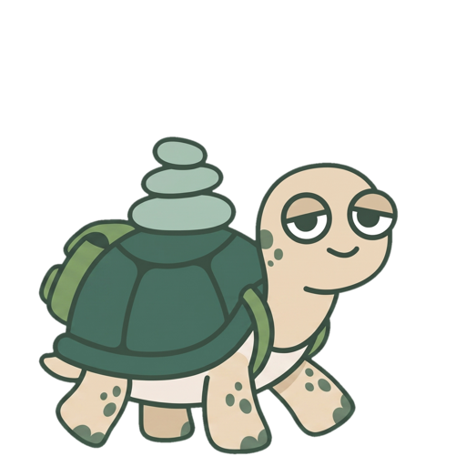
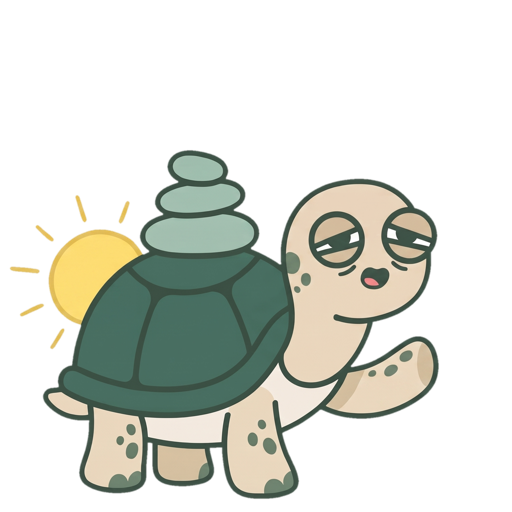
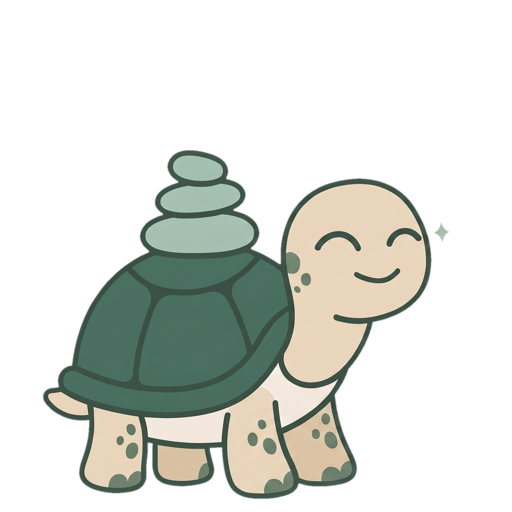
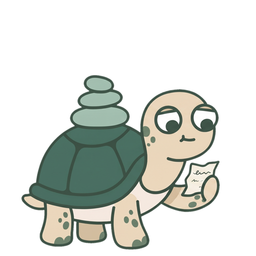

Progress Always Comes Eventually
PACE helps students who keep running late start the right thing at the right time.
7:41 AM. Class starts at 8:00. Baby just woke up.

She skips breakfast, runs, and walks in at 8:15. The quiz has already started.
Her lab report is due at 9. She remembered it at 11 last night.
of college students call themselves procrastinators. Steel & Ferrari (2013). We'll measure lateness ourselves (slide 7).
PACE turns a guessed morning into a planned one.

PACE does the planning, and forgives. Outcome to test: fewer late arrivals and fewer late submissions.
Today
It's built. Open the app, see the one next thing.
A working Android app: offline, no account, data stays on the phone.
Honest status: reminder timing on real phones is still being checked.
First buyers: college students on Android who start the day behind.
The 30 students in our classroom.
Estimates assume students match the global Android share (StatCounter, Nov 2025) and ~75% self-identify as procrastinators (Steel & Ferrari 2013). High-school students not counted.
Students pay ₱49 a month for Plus. The planner stays free.

Or a parent, for their child.
or ₱399 / year (about 32% less).
Sync and backup across phone and laptop.
Morning planner · deadlines · focus timer · low-energy mode · widgets
Sync + backup · phone and laptop · extra widgets and Tuck themes
Assumptions: price untested; Plus needs accounts, which we build after the pilot. Comparable: Tiimo keeps a free plan and about 50,000 of its 500,000+ users pay (~10%).
Evidence before forecasts: three tests, starting week 1.
Is lateness common enough?
Test: survey all 30 classmates, interview 8
Metric: % late to first class at least once a week
When: week 1. This is our baseline.
Can students set it up alone?
Test: 10 classmates set up their week with no help
Metric: % done in under 5 minutes; time taken
When: week 2
Will they keep using it, and pay?
Test: 8-week pilot with all 30 classmates
Metric: % still using in week 8; late days a week vs baseline; % who pre-order Plus
When: weeks 3–10
Every result will report its sample size, time period, baseline and metric definition. What we have today: a working app with 335 automated tests. That's technical proof, not customer proof.
Plus pays for itself if PACE saves 1.4 minutes a school day.
5 min/day × 22 school days = 110 min
1.83 h × ₱94/h
per month
per month
All figures are assumptions, not pilot results. ₱94/h = Metro Manila minimum wage ₱755/day ÷ 8 h. Minutes saved will be measured in the pilot with a time diary. Excluded: grades and stress, which we can't measure or attribute.
First users come from our classroom, then the Play Store.

30 classmates, on their own phones. This also covers Google Play's closed-testing step for new apps.
Public listing for any Android student. Short videos with Tuck to help students at other schools find it.
Assumption: reaching the first users costs about ₱0 beyond our time (organic channels only).
Today students use alarms and lists. Neither plans the morning.
| Works out when to start | Late → one next step | No streak guilt | Free, offline, no account |
|---|
✓ yes · ~ partly · – no. Our reading of public product pages, Nov 2026. Tiimo's 500,000+ users show students want calm planners.
Flutter app development, UI design, automated testing
User research and marketing, through the pilot; iOS, later
₱4,500 to run an 8-week pilot with our 30 classmates.
| Thank-you load, 30 classmates × ₱50 | ₱1,500 |
| Onboarding session + printed surveys | ₱1,000 |
| Google Play developer account (US$25, one-time) | ₱1,600 |
| Buffer, about 10% | ₱400 |
| Total | ₱4,500 |
No devices to buy: we test on our own and our classmates' phones, which already cover several brands.
- check30 classmates onboarded
- check% still using PACE in week 8
- checkLate days a week vs baseline
- check% who pre-order Plus at ₱49
Approve and fund the pilot in our classroom.
Thank you.
Questions?
Progress Always Comes Eventually.